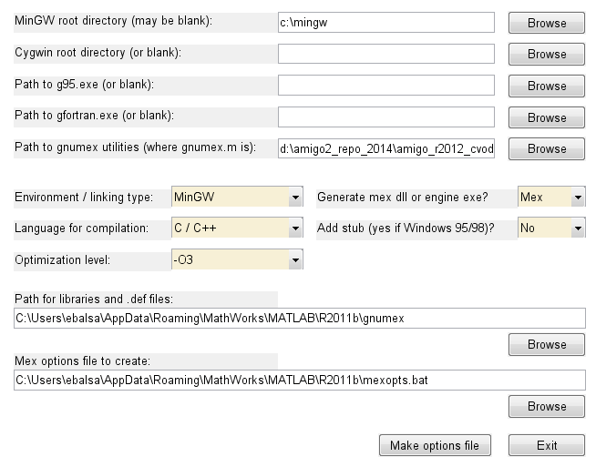
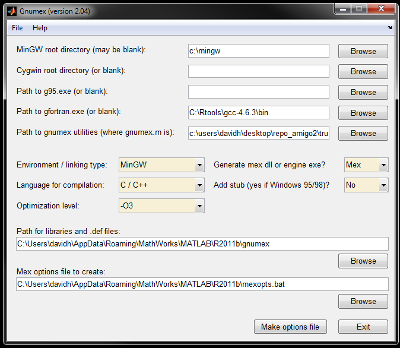

Enhanced mode with C
Contents
Enhanced mode with C generates the model in C ('charmodelC'). The model is then linked to the C based IVP solver CVODES.
C usage is compatible with MATLAB 32-bits for Windows or MATLAB 64-bits or 32-bits for LINUX.
Install charmodelC features in Windows & MATLAB 32-bits
We have tested AMIGO with visual studio 2010 and MINGW. Other compilers might also work. Here we provide steps to configure Matlab to compile mex files using gnumex as it is free and easily available.
Download and install the latest MinGW at http://www.mingw.org. If possible install it under C:\MinGW.
Go to the AMIGO base directory and run:
AMIGO_Startup;
----> Adding paths to current MATLAB session.... ----> MEX options file created for FORTRAN MEX-Files.... ---->To use C models run mex -setup and choose an valid compiler. Alternatively use GNUMEX. ----> Startup finished....
Followed by:
gnumex;
The following window will pop-up.

Select Make options file and close. The paths should be found automatically.
Install charmodelC features in Linux
Check if you already have gcc and g++ installed in your machine. Otherwise install both. To configure the MEX compiler you need to run (in Matlab):
mex –setup
C:\MATLAB\R2011B~1\BIN\MEX.PL: Error: '–setup' not found.
Error using mex (line 206)
Unable to complete successfully.
Error in doc_AMIGO_c_inst (line 54)
mex –setup
Select the option referring to gcc.
After that you will need to edit the mexopts.sh file which is usually located under /home/user_name/.matlab/Rxxxxx/mexopts.sh
And in the glnx86 or glnx64 area edit the CFLAGS variable and eliminate the -ansi flag; e.g. replace:
CFLAGS= -ansi –D_GNU_SOURCE
by
CFLAGS=–D_GNU_SOURCE
Try one of the examples and it should run. If there errors about lstdc++.so missing then install g++. For instance in Ubuntu you can try:
sudo apt-get install g++
Check your compiler installation
copyfile(fullfile(matlabroot,'extern','examples','mex','yprime.c'),'.','f'); mex yprime.c T=1; Y=1:4; yprime(T,Y)
You should get:
ans = 2.0000 8.9685 4.0000 -1.0947